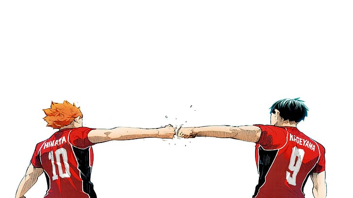
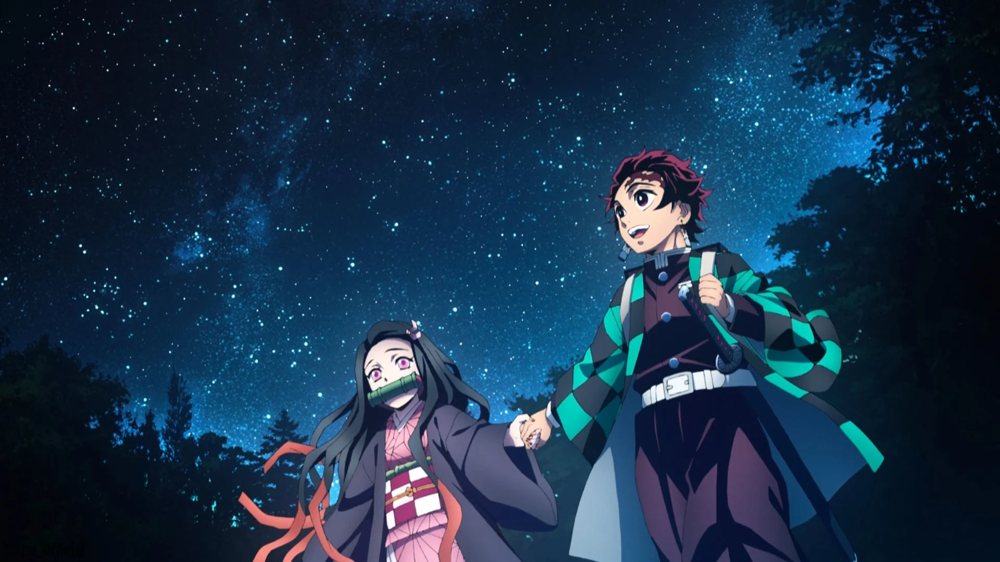

Rating: ★★★★★
Source: 9anime.to

Review: "Naruto" is a beloved and iconic anime series that has left a lasting impact on the world of anime and pop culture. This show, based on Masashi Kishimoto's manga, follows the journey of Naruto Uzumaki, a young ninja with dreams of becoming the Hokage, the leader of his village.
The strengths of "Naruto" lie in its compelling character development, intricate world-building, and thrilling battles. Naruto's growth from an outcast to a respected hero is a central theme, and viewers can't help but become emotionally invested in his journey. The diverse cast of characters, each with their unique abilities and backstories, adds depth and richness to the story.
The action sequences are dynamic and visually stunning, with ninjas employing various jutsu techniques and engaging in epic battles. The themes of friendship, perseverance, and the consequences of one's choices are woven into the narrative, making "Naruto" not only an action-packed series but also a poignant exploration of human nature.
However, "Naruto" is not without its flaws. Some viewers find the extensive use of filler episodes to be a drawback, as they can slow down the main plot. Additionally, the series is quite lengthy, which might be intimidating for newcomers.
In conclusion, "Naruto" is a must-watch for fans of shonen anime. Its engaging characters, well-crafted world, and themes of determination and friendship make it a classic in the genre. Whether you're into action-packed battles or character-driven storytelling, "Naruto" has something to offer.
Rating: ★★★★★
Source: 9anime.to
Review: "Haikyuu!!" is an exhilarating sports anime that hits all the right notes, whether you're a fan of volleyball or not. This series, based on Haruichi Furudate's manga, brings the fast-paced and intense world of high school volleyball to life with a perfect blend of excitement and heart.
One of the standout features of "Haikyuu!!" is its outstanding character development. The show does an exceptional job of creating relatable and well-rounded characters, each with their unique strengths, weaknesses, and personalities. Viewers will find themselves rooting for not just the main characters but also the supporting cast, as their growth and dynamics are explored throughout the series.
The volleyball matches are the heart of the show, and they are beautifully animated and choreographed. The attention to detail in portraying the strategies, teamwork, and individual skills involved in the sport is commendable. Even if you're not a volleyball enthusiast, the matches are so engaging that they'll have you on the edge of your seat.
Beyond the action, "Haikyuu!!" delves into themes of teamwork, perseverance, and the pursuit of excellence. It's not just about winning matches but also about personal growth and the bonds formed within the team. The anime balances humor, drama, and character interactions exceptionally well, making it a well-rounded and enjoyable series.
One potential drawback is that the series ends after its third season, leaving fans hungry for more. However, the quality of the storytelling and character arcs throughout the available episodes is undeniably satisfying.
In summary, "Haikyuu!!" is a sports anime gem that transcends its genre, offering compelling characters, breathtaking volleyball action, and valuable life lessons. It's a must-watch for both sports enthusiasts and those looking for a heartwarming and exciting anime experience.
Rating: ★★★★★
Source: 9anime.to
Review: "Demon Slayer," also known as "Kimetsu no Yaiba," is a visually stunning and emotionally gripping anime that has taken the anime world by storm. Adapted from Koyoharu Gotouge's manga, this series seamlessly blends action, drama, and supernatural elements to create an unforgettable experience.
The animation quality in "Demon Slayer" is nothing short of breathtaking. Ufotable's animation studio has done a remarkable job in bringing the characters and the world to life with fluid and dynamic action sequences. The use of vibrant colors and intricate details adds to the show's visual appeal, making it a true feast for the eyes.
Beyond its stunning visuals, "Demon Slayer" shines in its character development. The protagonist, Tanjiro Kamado, is a compelling and empathetic character who embarks on a journey to avenge his family and save his sister, Nezuko, who has been turned into a demon. The bond between Tanjiro and Nezuko is at the heart of the series and adds a touching layer to the story. Moreover, the diverse cast of demon slayers introduces unique personalities and abilities that keep viewers engaged.
The battles against demons are intense and well-choreographed, and the lore surrounding demons and demon slayers is richly detailed. The show also delves into themes of family, sacrifice, and the consequences of one's choices, giving it emotional depth.
One potential drawback is that the pacing can be slow at times, especially during character flashbacks and training arcs. Additionally, some viewers may find the occasional use of humor to be tonally inconsistent with the more serious aspects of the story.
In summary, "Demon Slayer" is a must-watch anime for its captivating story, exceptional animation, and well-crafted characters. It has rightfully earned its place as a modern anime classic and is a thrilling and emotional journey that leaves a lasting impact on its audience.